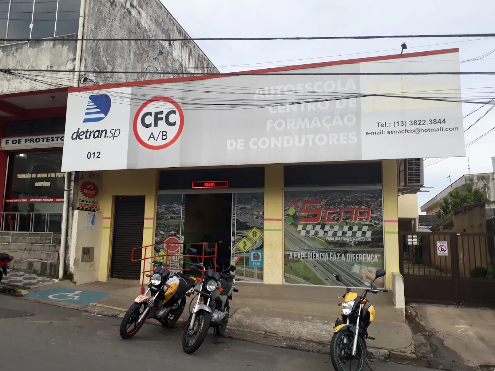
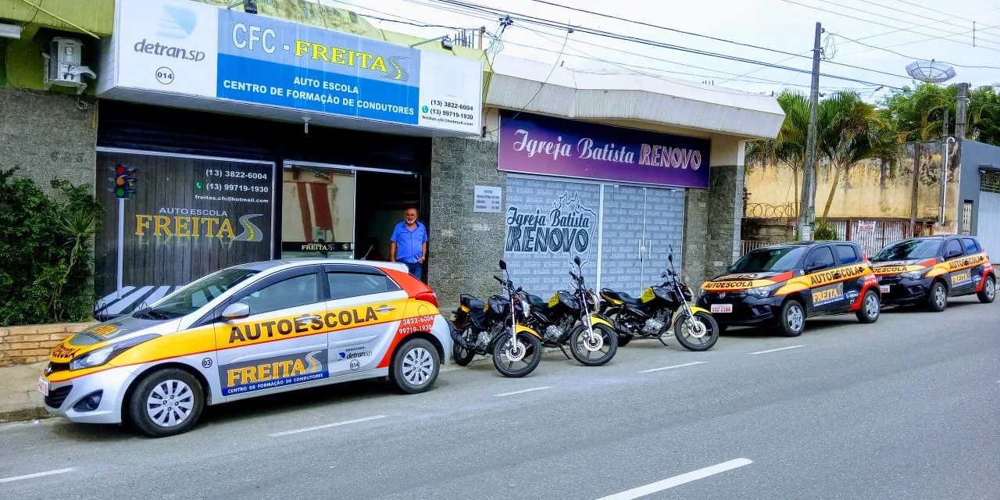
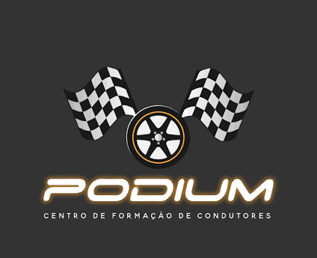

C.f.c. Auto Escola Senna Ltda
R. Dr. R. Gerônimo Monteiro Lopes, 50 - Vila Sao Francisco, Registro - SP, 11900-000
Telefone: (13) 99730-0696
CEP: 11900-000.
O atendimento funciona de segunda a sexta-feira, das 8h às 18h.
A SPI é uma proposta de semáforo inteligente voltada à mobilidade, acessibilidade e segurança no trânsito.
Sim. O projeto utiliza boas práticas de segurança para proteger informações e dados dos usuários.
As informações disponibilizadas são utilizadas exclusivamente dentro das funcionalidades previstas pelo sistema.
Reclamações e sugestões poderão ser encaminhadas pelos canais oficiais de atendimento da SPI.

R. Dr. R. Gerônimo Monteiro Lopes, 50 - Vila Sao Francisco, Registro - SP, 11900-000
Telefone: (13) 99730-0696
CEP: 11900-000.

Endereço: R. Haguemu Matsuzawa, 683 - Vila Ribeirópolis, Registro - SP, 11900-000
Telefone: (13) 99719-1988
CEP: 11900-000.

Endereço: Praça - R. Nossa Sra. da Guia, 85 - Centro, Eldorado - SP.
Telefone: (13) 99778-8630
CEP: 11960-000.
"O projeto une forças com os principais Centros de Formação de Condutores de Registro e Eldorado, garantindo que as diretrizes de segurança no trânsito cheguem a diferentes comunidades do Vale do Ribeira."